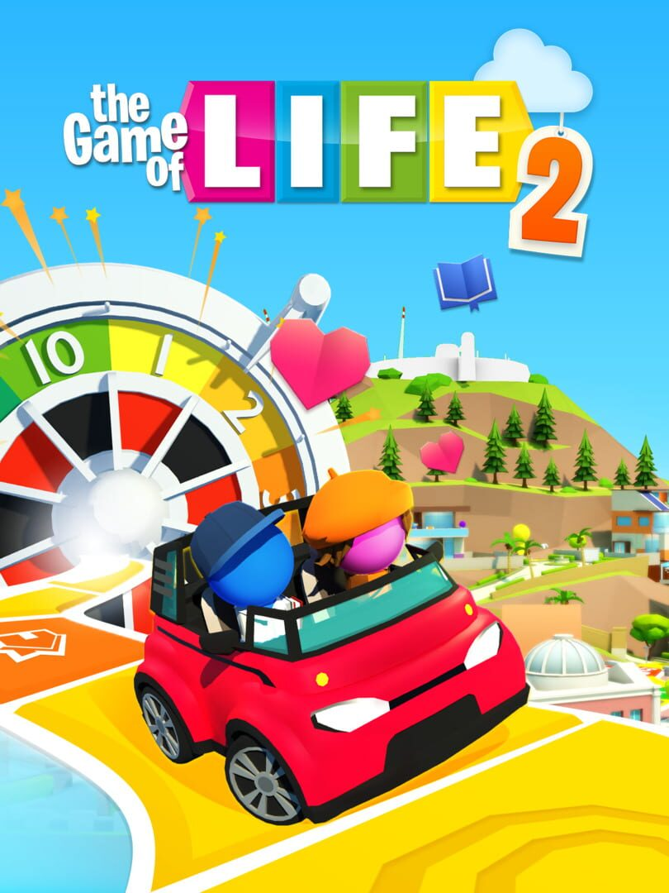

THE GAME OF LIFE 2
THE GAME OF LIFE 2
Details
|  | |
| Playtime | 3h 52m 0s |
| Last Activity | 16/09/2024 15:12:12 |
| Added | 16/09/2024 15:31:46 |
| Modified | 18/05/2025 1:23:27 |
| Completion Status | Played |
| Library | Steam |
| Source | Steam |
| Platform | PC (Windows) |
| Release Date | 15/07/2020 |
| Community Score | 54 |
| Critic Score | 50 |
| User Score | |
| Genre | Card & Board Game Simulator |
| Developer | Marmalade Game Studio Marmalade Game Studio Ltd |
| Publisher | Marmalade Game Studio Marmalade Game Studio Ltd |
| Feature | Multiplayer Single Player |
| Links | Official YouTube Steam iPhone iPad Twitch |
| Tag | 3D 4 Player Local Board Game Card Game Cartoon Casual Character Customization Choices Matter Choose Your Own Adventure Colorful Family Friendly Life Sim Local Multiplayer Multiplayer Party PvP Sequel Simulation Strategy Tabletop |
Description
Prepare to live a thousand lives in The Game of Life 2! It’s the award-winning official sequel to the classic board game played by millions around the world. Gather your friends and family and dive into a bright, fun 3D world, bursting with adventure!

A new Peg has entered the board! Choose from the Pink, Blue or the NEW Purple Peg. Select an Outfit and make your Peg your own. Browse a selection of cars, bikes and scooters and find a ride to suit your style. Will you wear your business suit on a bicycle? Or roll up to College in a Sports Car? It’s up to you!

It’s time to fly the nest! Spin the iconic Spinner and set off on your life journey. Will you go to College immediately, or drive straight into a career? Whatever direction you take, the spinner will decide where you land along the way.

You’ll be presented with decisions at every twist and turn, but crossroad moments will affect your life path. Will you get married or stay single? Have kids or adopt a pet? Buy a house? Make a career change? It’s up to you! And in this sequel there’s an added crossroad, so you can choose to make those important choices earlier or later in life.

In the original The Game of Life game the wealthiest Peg won. In The Game of Life 2 decisions have been updated to fit with modern times, so you’ll also earn points for choices that bring you Knowledge and Happiness. Now it’s not only possible to win rich, but you can maximise your Knowledge or Happiness, or go for a healthy mix of all three, and come out on top!

Life goes on! When you reach the end of the game you can choose to rest in a luxury retirement home, or ride off into the sunset and fulfil your bucket list! It’s up to you!

Unlock new Outfits and Vehicles by playing the game and earning rewards! Collect 60 Happiness points, travel 100 spaces, collect 5000k; each accomplishment unlocks a puzzle piece. When you collect 6 puzzle pieces you unlock a bonus item, and there are eight to unlock in each world!

Live life in enchanted worlds, make friends with dinosaurs in the Age of Giants and launch into the futuristic Lunar Age! Every new world features new Outfits, Vehicles, Jobs, Properties and more! Buy worlds separately in-game, or buy the Ultimate Life Collection to unlock them all!

Join your friends and family, whether they’re on PlayStation 4, PlayStation 5, Xbox, PC (Steam), Nintendo Switch, iOS or Android. Play together seamlessly on multiple consoles and platforms.
A new Peg has entered the board! Choose from the Pink, Blue or the NEW Purple Peg. Select an Outfit and make your Peg your own. Browse a selection of cars, bikes and scooters and find a ride to suit your style. Will you wear your business suit on a bicycle? Or roll up to College in a Sports Car? It’s up to you!
It’s time to fly the nest! Spin the iconic Spinner and set off on your life journey. Will you go to College immediately, or drive straight into a career? Whatever direction you take, the spinner will decide where you land along the way.
You’ll be presented with decisions at every twist and turn, but crossroad moments will affect your life path. Will you get married or stay single? Have kids or adopt a pet? Buy a house? Make a career change? It’s up to you! And in this sequel there’s an added crossroad, so you can choose to make those important choices earlier or later in life.
In the original The Game of Life game the wealthiest Peg won. In The Game of Life 2 decisions have been updated to fit with modern times, so you’ll also earn points for choices that bring you Knowledge and Happiness. Now it’s not only possible to win rich, but you can maximise your Knowledge or Happiness, or go for a healthy mix of all three, and come out on top!
Life goes on! When you reach the end of the game you can choose to rest in a luxury retirement home, or ride off into the sunset and fulfil your bucket list! It’s up to you!
Unlock new Outfits and Vehicles by playing the game and earning rewards! Collect 60 Happiness points, travel 100 spaces, collect 5000k; each accomplishment unlocks a puzzle piece. When you collect 6 puzzle pieces you unlock a bonus item, and there are eight to unlock in each world!
Live life in enchanted worlds, make friends with dinosaurs in the Age of Giants and launch into the futuristic Lunar Age! Every new world features new Outfits, Vehicles, Jobs, Properties and more! Buy worlds separately in-game, or buy the Ultimate Life Collection to unlock them all!
Join your friends and family, whether they’re on PlayStation 4, PlayStation 5, Xbox, PC (Steam), Nintendo Switch, iOS or Android. Play together seamlessly on multiple consoles and platforms.